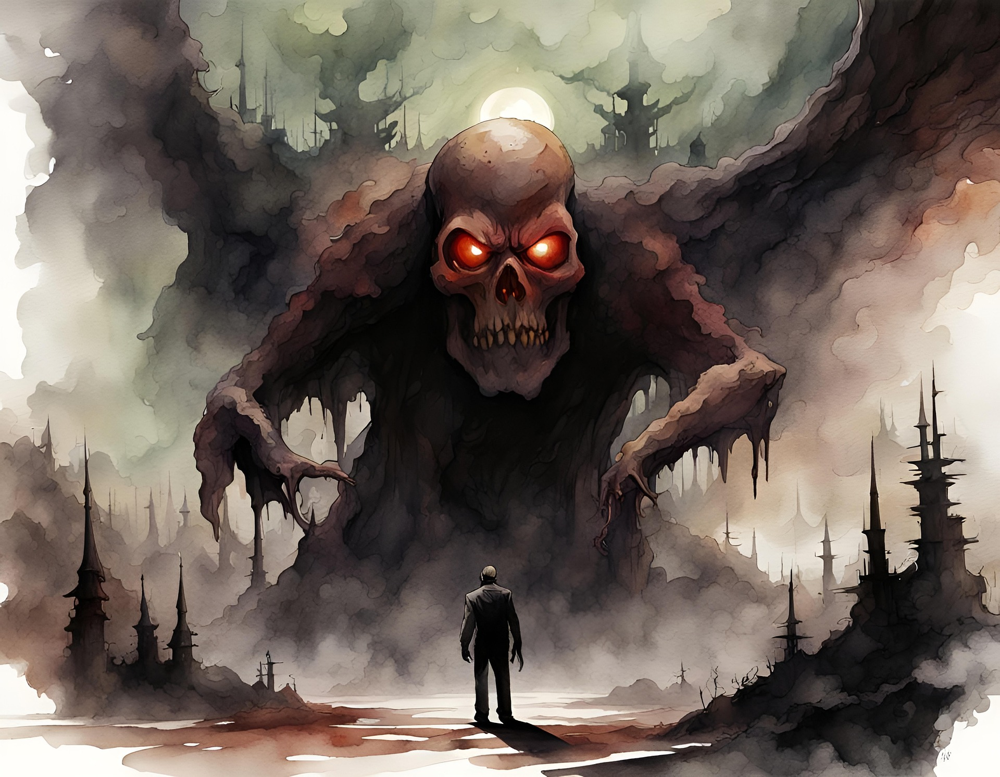

Poznaj świat gier RPG.
Ostatnio miałem okazję oglądać lets play gry Doom. Powiem, że grafika przypomina mi tą z Wolfensteina, no ale sama grywalność jest uważam niesamowita. W grze wcielamy się w postać, która łazi gdzieś po lochach, napierdziela w Beholdery, zbiera ekwipunek. Jestem bardzo pozytywnie zaskoczony samą grą, i ten heavy metal w tle. Coś pięknego, poezja której sam Szekspir by się nie powstydził.

Oglądnąłem sobie tą starszą wersję Doom - a i tą nowszą trochę i powiem tak, różnice są. W starszym Doom-ie grafika była wiadomo, jak z tych gierek z Commodore, ale była niesamowita. Grywalność kurwa nieziemska, klimat po prostu obłędny, niesamowity, heavy metal w tle, normalnie Beholdery wyskakują ci niewiadomo skąd. W nowym Doom - ie już nie ma heavy metalu tylko dużo niższa muzyka. No ale u diaska, czemu ktoś aż tak spierdolił tego nowego Doom - a? Klimat jest tam słaby uważam, dawno oklepany, grywalność bliska zeru. Mogli kurwa w tamtych czasach wygenerować 2 gry, pierwsza jak jest czyli grafika z Commodore, druga jak ta nowsza wersja i wypuścić w obecnych czasach, wtedy może byłoby inaczej. A tak to nawet odgrzewanego kotleta nie mamy. Nowsze nie znaczy lepsze.